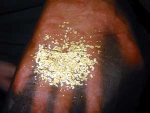

Cheap eats: Pars Deli
|
photo / Kristin Hillery  Chicken shawarma and soup at Pars Deli
Chicken shawarma and soup at Pars Deli
Chicken shawarma and soup at Pars Deli I’ve had many arguments over who has the best gyro or falafel in town. The conversation typically ends up with people constructing the perfect wrap with ingredients from all over town. Every time, the bread from Pars Deli makes the short list. The gyro meat, shawarma meat, and falafel patties are pretty darn good. Their status as the best is debatable. People come for the bread – 1/3 of an inch thick, fluffy, and with the perfect amount of oil in the dough. The texture yields to your tongue as it melts away. I’m sure the breadless items on the menu are great; it’s just impossible to abstain from that flatbread. A wrap is around $5 and you can get a combo for $7, which includes a wrap, choice of a side (such as lentil soup, cold yogurt soup, fava beans, or saffron and currant rice), and a drink – I suggest the iced tea; it’s served cold and needs neither ice nor sweetener. I think there’s rosewater in it.
How much porn can be printed from a single ink cartridge?
|

Cockeyed.com / all rights reserved 750 milliliters of Goldschlager has this much gold inside
Admit it: You’ve wondered how much gold is inside a bottle of Goldschlager. It’s real gold, so it’s gotta be worth something… right? Cockeyed.com’s series How Much Is Inside? has answered that very question:
Unfortunately, the gold weighed less than a tenth of a gram (0.1g). It wouldn’t even register on my scale. This thin smear of gold… was worth less than $1.38.
Need to know how many kegs to buy for your upcoming frat party, shithead? Sure, you may know that a 15.5 gallon keg contains roughly 165 cans (6.5 cases) of beer, but how does that translate to red Solo party cups? Cockeyed performed a highly scientific test: They threw a party and counted the drinks. The results? A keg contains 141 cups of beer – and, in the case of their test brew (Michelob), 25,810 calories.
Web comic: The Adventures of Bone Boy
|
This morning, I stumbled into Robert Berry’s brilliant Adventures of Bone Boy.
From the author:
Get it? See, she’s dead so she can’t get a sex change, now! Let this be a lesson to you, kids!
Check out more Adventures of Bone Boy at retro CRUSH. Also included in their comics archive: The Adventures of No-Eyelid-Man and the scatological Adventures of Shit-Boy McJohnson.

Cause for Drinks benefit for EmanciPET happens tonight
|

courtesy All Day Buffet All Day Buffet poster detail
Those crazy kids at All Day Buffet are always trying to help people and stuff. They’re at it again tonight at the Tiniest Bar in Texas, where they’re hosting Cause for Drinks, an event where $2 of from every drink purchased and all proceeds from Tito’s Vodka and Sweet Leaf Tea will go to EmanciPET.
EmanciPET is a local non-profit that provides low-cost pet services, including surgical sterilization (and on some days they offer this service for free) as a means of controlling the cat and dog population and preventing animal homelessness.
So tonight at the Tiniest Bar in Texas, come out and have a drink for a good cause – you can even bring your pet. (Seriously, they encourage you to do so. Just remember that nobody likes ferrets or birds.) There will also be live music from The Sheeps, The Weird Weeds, and more.


Recent comments